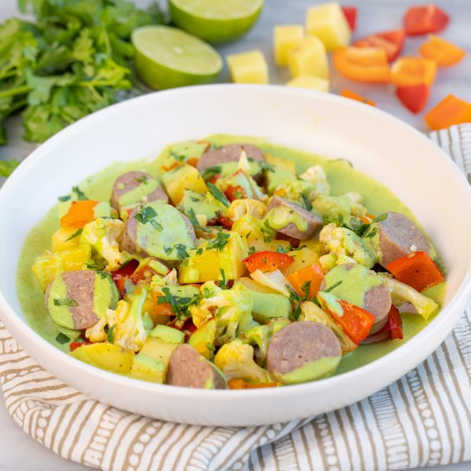

Sausage, Cauliflower & Pepper Bowl with Cilantro-Jalapeño Sauce

Prep Time
35 min
Nutrition (per serving)
661.4 kcalCalories
24.4 gProtein
34.5 gCarbs
48.4 gFat
Full nutrition table
| Calories | 661.4 kcal |
| Total fat | 48.4 g |
| Saturated fat | 11.9 g |
| Trans fat | 0.2 g |
| Cholesterol | 90.1 mg |
| Sodium | 804.1 mg |
| Carbohydrates | 34.5 g |
| Fiber | 8.9 g |
| Sugars | 10.1 g |
| Protein | 24.4 g |
| Potassium | 1536.8 mg |
| Calcium | 84.6 mg |
| Iron | 3.4 mg |
| Vitamin A | 76.5 IU |
| Vitamin C | 251.2 mg |
| Vitamin D | 27.3 IU |
Cookware
Ingredients
- 1 medium headcauliflower
- 1 small bunchcilantro
- 2 clovesgarlic
- 2jalapeño peppers
- 1lime
- 4pork sausages
- 4red bell peppers
- 2 mediumyellow potatoes
- black pepper
- extra virgin olive oil
- mayonnaise
- salt
Steps
- Preheat oven to 400°F.
- Wash and dry the fresh produce.2 medium yellow potatoes
4 red bell peppers
1 medium head cauliflower
2 jalapeño peppers
1 small bunch cilantro
1 lime - Peel and medium dice potatoes; transfer to a large baking sheet pan.
- Trim, seed, and medium dice bell peppers; add to the baking sheet with the potato.
- Cut the cauliflower head into quarters, then trim off and discard the leaves and thick stem. Separate into bite-sized florets and cut stems into smaller pieces; add to the baking sheet.
- Drizzle veggies with oil and season with salt and pepper; toss to coat, then spread out in an even layer. Add sausages to the baking sheet, nestling them into the veggies.4 tsp extra virgin olive oil
½ tsp salt
¼ tsp black pepper
4 pork sausages - Place baking sheet in the oven and roast until veggies are tender and sausages are cooked through, 15-20 minutes. Remove from oven.
- Meanwhile, halve jalapeño peppers lengthwise; seed and remove ribs with a spoon. Place in a blender. (Be careful with jalapeños; do not touch your eyes and ensure you wash your hands after handling or wear gloves while preparing.)
- Shave cilantro leaves off the stems; discard stems and mince the leaves. Add cilantro to the blender with the jalapeño (reserving a small handful for garnish).
- Juice lime into the blender.
- Peel garlic and add to the blender.2 cloves garlic
- Add mayo, water, salt, and pepper to the blender; purée on high until the sauce is smooth. Set aside.⅓ cup mayonnaise
¼ cup water
½ tsp salt
¼ tsp black pepper - When the sausages are done, transfer to a cutting board and slice crosswise into 1-inch thick pieces.
- To serve, divide veggies and sausage between bowls; pour sauce over top and sprinkle with reserved cilantro. Enjoy!